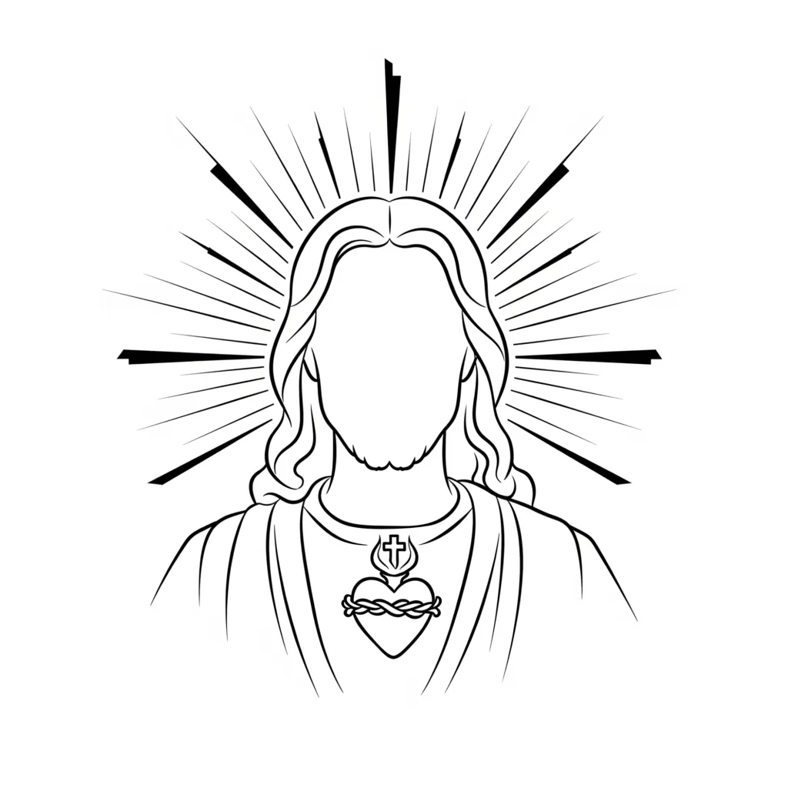

The Way
Favourite Quotes and Passages
"And Jesus said to him, “Why do you call me good? No one is good except God alone"
— Mark 10:18
 God is your I AM. Jesus is an aspect of self walking through the mind and saving it thought by thought, but the self that sent Jesus, is ultimately God your I AM.
"We give thanks to God always for all of you, constantly mentioning you in our prayers.."
— 1 Thessalonians 1:2
 The “we” is the reader addressing the many aspects of self, a continual inward reminding. To “give thanks to God always” is assumption of fulfilment — picturing and feeling the desire as already received, and keeping every part of oneself aligned to the I AM through that gratitude.
The “we” is the reader addressing the many aspects of self, a continual inward reminding. To “give thanks to God always” is assumption of fulfilment — picturing and feeling the desire as already received, and keeping every part of oneself aligned to the I AM through that gratitude.
"Set me as a seal upon your heart,
 as a seal upon your arm,
as a seal upon your arm,
for love is strong as death,
jealousy is fierce as the grave.
Its flashes are flashes of fire,
the very flame of the LORD.
— Song of Solomon 8:6
To set a seal upon the heart and arm is to fix assumption within and without; love is as final as death, ending the old state; jealousy, like the grave, allows no rival; and its flashes of fire are the creative flame of God. The crucifixion is this very mystery: consciousness nailed to its desire until it ignites and rises in new form.
"There is no fear in love, but perfect love casts out fear. For fear has to do with punishment, and whoever fears has not been perfected in love.
We love because he first loved us."
— 1 John 4:18
'Us' are the various opposing and divided parts of mind, the flock of the shepherd. "He first loved us' points to the I AM being the source of love"
"..whoever keeps his word, in him truly the love of God is perfected. By this we may know that we are in him"
— 1 John 2:5
'John' is a characterisation of the reader when he knows and exhalts the word of God - his "I AM"